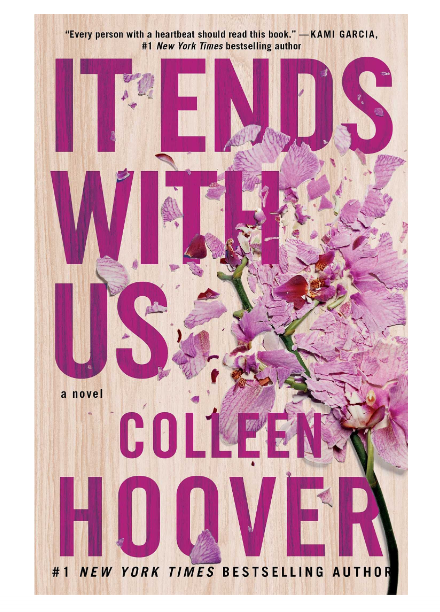
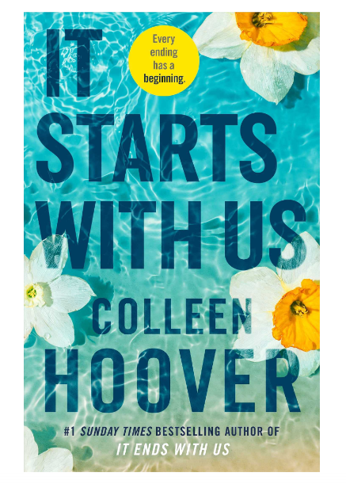

1. PREM PURANA: MYTHOLOGICAL LOVE STORIES
Stories of love and extraordinary devotion
No one is untouched by love, not even devas (gods) and asuras (demons), kings and nymphs. And when they face life’s unexpected
tribulations, their love also undergoes trials. Read how Ganesha took myriad forms to please Riddhi, Siddhi and Buddhi, how Ravana
shared an unbreakable bond with his true love, Mandodari and how Nal and Damayanti’s relationship was tested till nothing remained.
Tormented by passion, wracked by betrayal, torn by the agony of separation, love in its many splendored forms is the origin of these
incredibly endearing stories of Prem Purana.
ABOUT THE AUTHOR:
Usha Narayanan had a successful career in advertising, radio and corporate communications before becoming a full-time author.
She has written several books, including the suspense thriller The Madras Mangler and the fun office romance Love, Lies and Layoffs.
Her books Pradyumna: Son of Krishna and The Secret of God’s Son have been praised as ‘Indian mythology at its fiercest and finest’.
When she is not travelling, writing or editing, Usha reads everything from thrillers to the puranas.
To shop

2. IT ENDS WITH US
The newest, highly anticipated novel from beloved #1 New York Times bestselling author, Colleen Hoover. Sometimes it is the one who
loves you who hurts you the most. Lily hasn?t always had it easy, but that's never stopped her from working hard for the life she
wants. She?s come a long way from the small town in Maine where she grew up?she graduated from college, moved to Boston and started
her own business. So when she feels a spark with a gorgeous neurosurgeon named Ryle Kincaid, everything in Lily?s life suddenly seems
almost too good to be true. Ryle is assertive, stubborn, maybe even a little arrogant. He?s also sensitive, brilliant and has a
total soft spot for Lily. And the way he looks in scrubs certainly doesn?t hurt. Lily can not get him out of her head. But Ryle?s
complete aversion to relationships is disturbing. Even as Lily finds herself becoming the exception to his ?no dating? rule, she can
not help but wonder what made him that way in the first place. As questions about her new relationship overwhelm her, so do thoughts
of Atlas Corrigan?her first love and a link to the past she left behind. He was her kindred spirit, her protector. When Atlas suddenly
reappears, everything Lily has built with Ryle is threatened. With this bold and deeply personal novel, Colleen Hoover delivers a
heart-wrenching story that breaks exciting new ground for her as a writer. Combining a captivating romance with a cast of all-too-human
characters, it ends with us is an unforgettable tale of love that comes at the ultimate price.
ABOUT THE AUTHOR:
Colleen Hoover is the #1 New York Times bestselling author of more than twenty-three novels, including It Ends with Us, All Your Perfects,
Ugly Love, and Verity. In 2015, Colleen and her family founded a nonprofit called The Bookworm Box, a bookstore and monthly book subscription
service that has donated over $1,000,000 to various charities to date. Colleen lives in Texas with her husband and their three boys. For
more information, please visit ColleenHoover.com.
To shop

3.IT STARTS WITH US
It’s a sequel to It End With Us .But this novel author clearly give pictures of domestic violence and how it’s affecting the children
I prefer novels which give pleasure to read and valuable message to the society .what’s happening in the society despite of time
and situation, an exemplary author can convey to the readers as novels short stories etc.
It’s the story of Atlas a chef and Lily the florist .Lily is a single parent with having a daughter who is turning one .Lily and her
ex-husband Ryle settled into a civil parenting system ,she is not comfortable leaving her daughter Emerson with Ryle because of the
assaulting and abusing she got for him. Bumping to her childhood friend after 2 years make the turning point in the story. Slowly
their relation changes and Lily is afraid of how Ryle react to this and the trauma she is going through is almost everywhere we
can see in the society but we call in different names .
ABOUT THE AUTHOR:
Colleen Hoover is the #1 New York Times and International bestselling author of multiple novels and novellas. She lives in Texas with her
husband and their three boys. She is the founder of The Bookworm Box, a non-profit book subscription service and bookstore in Sulphur
Springs, Texas.
To shop